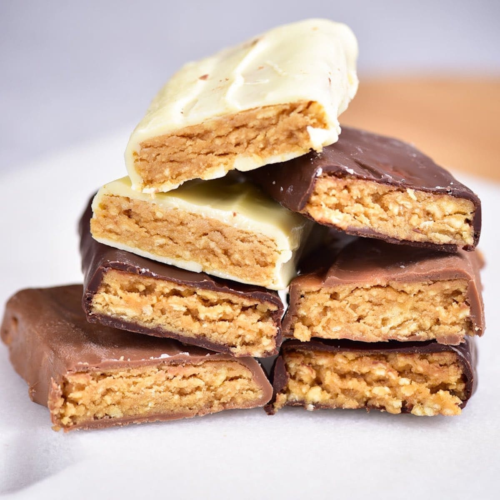

Protein Bars

Description
This thick, chewy, and delicious bar is convenient, healthy, and peanut butter flavoured!
Each bar contains over 21 grams of protein, perfect for bodybuilders or anyone looking to increase their protein intake.
Ingredients
- 1/2 cup coconut flour
- 3/4 cup protein powder
- 2 cups peanut butter
- 1/2 cup maple syrup
- 2 cups chocolate chips
Steps
- Line a deep pan with parchment paper and set aside. For thicker bars, use an 8 x 8-inch pan. For thinner bars, use any size bigger.
- In a large mixing bowl, add your dry ingredients and mix well.
- In a small mixing bowl, melt your peanut butter with sticky sweetener until combined. Add to dry ingredients and mix until fully combined.
- Transfer protein bar batter into the lined baking dish and press firmly in place. Refrigerate or freeze until firm. Once firm, cut into bars and cover in optional chocolate and enjoy!